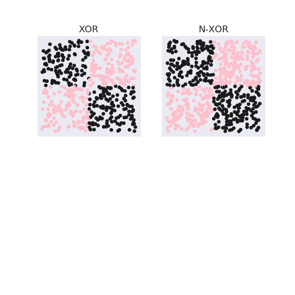
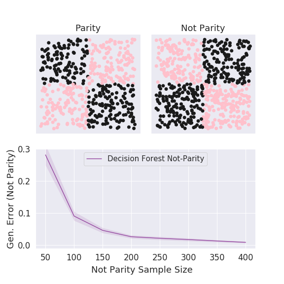
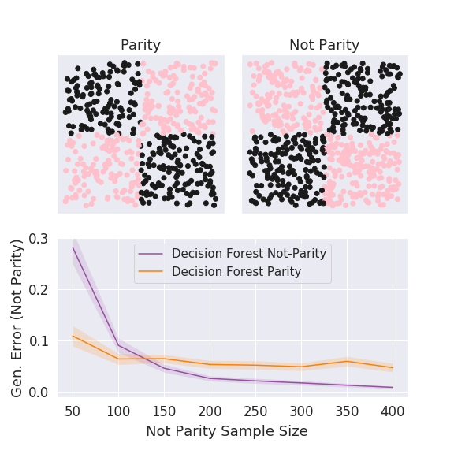
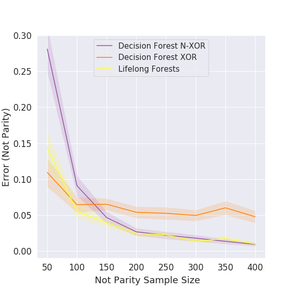
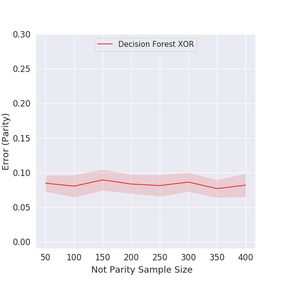
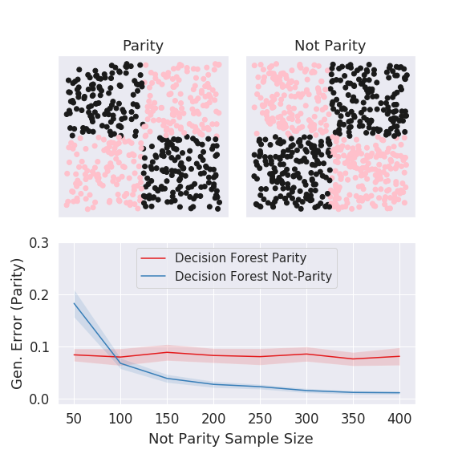
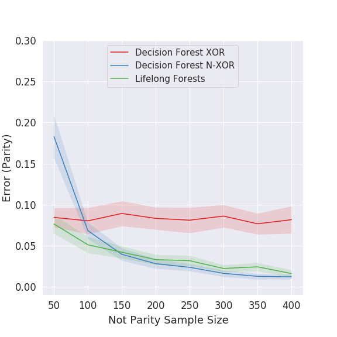

name:opening **A Theory and Practice of the Lifelong Learnable Forest**<br> Hayden Helm | Ronak Mehta <br> Carey E. Priebe | Raman Arora | [Joshua T. Vogelstein](https://neurodata.io) (JHU) <br> <!-- {[BME](https://www.bme.jhu.edu/),[ICM](https://icm.jhu.edu/),[CIS](http://cis.jhu.edu/),[KNDI](http://kavlijhu.org/)}@[JHU](https://www.jhu.edu/) --> <a href="https://neurodata.io"><img src="images/neurodata_purple.png" style="height:430px;"/></a> <!-- <img src="images/funding/jhu_bme_blue.png" STYLE="HEIGHT:95px;"/> --> <!-- <img src="images/funding/KNDI.png" STYLE="HEIGHT:95px;"/> --> <!-- <font color="grey"></font> --> .foot[[jovo@jhu.edu](mailto:jovo@jhu.edu) | <http://neurodata.io/talks> | [@neuro_data](https://twitter.com/neuro_data)] --- ### Program goals 1. Formalize Theory of Lifelong Learning 2. Develop Lifelong Learning Forests (L2F) algorithm 3. Demonstrate L2F achieves SOA lifelong learning 3. Prove L2F theoretically "solves" lifelong learning 4. Discuss Future plans --- class: middle, inverse ## .center[What is Lifelong Learning?] --- ## What is Learning? <img src="images/Vapnik71.png" style="width:500px;"/> -- <img src="images/Valiant84.png" style="width:500px;"/> --- ## What is Learning? <img src="images/Mitchell97.png" style="width:600px;"/> --- ## What is Learning? Tom Mitchell 1997 (not exact quote): "Given data $D_n$ from distribution $P$ in .r[setting $S$], an .r[algorithm $f$] **learns** when $f$'s .r[performance $\mathcal{E}$] improves with increasing sample size $n$." <br> -- A machine learning **task** is: Given $n$ samples from $P$ in $S$, design $f$ to optimize $\mathcal{E}$ . --- ### What is a Setting? A setting is a sextuple $S = \lbrace \mathcal{Z}, \mathcal{A}, \mathcal{P}, \mathcal{H}, \ell, {R} \rbrace$ | Definition | Notation | Example |:--- |:--- |:--- | | Measurements | $ \mathcal{Z}$ | $z_i = (x_i,y_i): i \in [n]$ | | Model | $\mathcal{P} := \lbrace P_\theta : \theta \in \Theta \rbrace$ | Gaussian | Action space | $\mathcal{A}$ | turn left | Hypotheses | $\mathcal{H} = \lbrace h: \mathcal{Z} \to \mathcal{A} \rbrace$ | $a = \mathbb{I}(z>0)$ | Loss Function | $\ell: \mathcal{H} \times \mathcal{A} \to \mathbb{R}_+$ | $ (a - y)^2$ | Risk Functional | $R: \mathcal{P} \times \mathcal{L} \times \mathcal{H} \to \mathbb{R}_+$ | $\mathbb{E}_P[\ell( h(z), a)]$ --- ### What is an Algorithm? $f$ is a sequence of learning procedures, $f_1, f_2, \ldots$, where each $f_n \in \mathcal{F}$ maps from an element of data space to an action, $f\_n : \mathcal{Z}^n \to \mathcal{H}$. ### What is Performance? Generalization error $\mathcal{E}$ is the expected risk with respect to training dataset: $$ \mathcal{E}\_S(f\_n,P) = \mathbb{E}_{P}[R(f_n(D_n))].$$ --- ## What is Learning? "Given data $D_n$ from distribution $P$ in .r[setting $S$], an .r[algorithm $f$] **learns** when $f$'s .r[performance $\mathcal{E}$] improves with increasing sample size $n$." <br> $f$ learns iff $\mathcal{E}\_S(f\_n,P)$ is non-constant monotonically decreasing: $$ \forall n: \; \mathcal{E}\_S(f\_n,P) \geq \mathcal{E}\_S(f\_{n+1},P) \text{ (never goes up)}$$ $$\exists \; n: \mathcal{E}\_S(f\_n,P) > \mathcal{E}\_S(f\_{n+1},P) \text{ (sometimes goes down)}$$ --- ### What is Learning Efficiency? The relative efficiency of $f\_n$ relative to $f'\_n$ is $$RE\_{n}^{P}(f,f') := \frac{\mathcal{E}\_S(f\_n,P)}{\mathcal{E}\_S(f'\_n,P)}.$$ <br> In general, we want $RE \leq 1 - \delta$, for some $\delta>0$ and $n,n' > n_0$. -- <br> The goal of machine learning is to design new $f$'s that are increasingly more efficient. --- ### What is Transfer Learning? Given $n> n\_0$ samples from $P$ in setting $S$ .r[and $n'> n\_0$ samples from $Q$], an algorithm $f$ **transfer learns** when $f$'s performance $\mathcal{E}$ improves with increasing sample size $n$ .r[more when also including the $n'$ samples from $Q$]. -- Let $TLE\_{n,n'}^{P,Q}(f):=\frac{\mathcal{E}\_S(f\_{n+n'},P)}{\mathcal{E}\_S(f\_{n},P)}.$ Formally, $f$ transfer learns iff $\exists \; \delta, n\_0 > 0$ such that $\forall n\_j > n\_0$: $TLE\_{n,n'}^{P,Q}(f) < 1 - \delta.$ --- ### What is Universal Transfer Learning? We say that $f$ **universally** transfers in setting $S$ iff $\exists \; \delta, n\_0 > 0$ such that $\forall n\_j > n\_0$: <!-- $\forall n,n' > n\_0$, $\exists \; \delta > 0$ such that: --> $\exists P,Q \in \mathcal{P}: TLE\_{n,n'}^{P,Q}(f) < 1 - \delta$ (sometimes better), and $\forall P,Q \in \mathcal{P}: TLE\_{n,n'}^{P,Q}(f) \leq 1 + \delta$ (never much worse). --- ### What is Multi-Task (MT) Learning? Given $n$ samples from .r[$J$ different distributions $P\_j$ in settings $S\_j$], an algorithm $f$ **multi-task learns** when $f$'s performance $\mathcal{E}\_j$ $\forall j$ improves with increasing sample size $n\_j$ more .r[on average] when also including .r[all the other $n-n\_j$ samples]. -- Let $MTE^{\vec{P}}\_{\vec{n}}(f) := \frac{1}{J}\sum\_{j=1}^J \frac{\mathcal{E}\_j(f\_{\sum\_j n\_j},P\_j)}{\mathcal{E}\_j(f\_{n_j},P\_j)}.$ <br> Formally, $f$ MT learns iff $\exists \; \delta, n\_0 > 0$ such that $\forall n\_j > n\_0$: <!-- \; \& \; \forall j \in [J]$: --> <!-- $ \forall j \in [J]$ $\exists \; n\_j >n\_0 \; \& \; \delta > 0$ such that --> $$MTE^{\vec{P}}\_{\vec{n}}(f) < 1 - \delta. $$ <br> --- ### What is Universal MT Learning? We say that $f$ **universally** multi-task learns in settings $\vec{S}$ iff $\exists \; \delta, n\_0 > 0$ such that $\forall n\_j > n\_0$: $\exists \vec{P} \in \vec{\mathcal{P}}: MTE\_{\vec{n}}^{\vec{P}}(f) < 1 - \delta$ (sometimes better), and $\forall \vec{P} \in \vec{\mathcal{P}}: MTE\_{\vec{n}}^{\vec{P}}(f) \leq 1 + \delta$ (never much worse). --- ### What is Lifelong Learning? Given $n$ .r[sequential] samples from .$J$ different distributions $P\_j$ in settings $S\_j$, an algorithm $f$ **lifelong learns** when $f$'s performance $\mathcal{E}\_j$ $\forall j$ improves with increasing sample size $n\_j$ more on average when also including .r[both future and past data], and performance .r[never gets much worse]. Let $ LLE^{P\_j,\vec{P}}\_{n\_j,\vec{n}}(f) := \frac{\mathcal{E}\_j(f\_{\sum\_j n\_j},P\_j)}{\mathcal{E}\_j(f\_{n_j},P\_j)}.$ Formally, $f$ lifelong learns iff $\exists \; \delta, n\_0 > 0$ such that $\forall n\_j > n\_0$: $\frac{1}{J}\sum\_{j=1}^J LLE^{P\_j,\vec{P}}\_{n\_j,\vec{n}}(f) < 1 - \delta$ (average better), and $\nexists j \in [J]: LLE^{P\_j,\vec{P}}\_{n\_j,\vec{n}}(f) \geq 1 + \delta$ (never much worse). --- ### What is Universal Lifelong Learning? We say that $f$ **universally** lifelong learns in settings $\vec{S}$ iff $\forall n\_j > n\_0$ and $\forall \vec{P} \in \vec{\mathcal{P}}$, lifelong learning holds. --- ### Three Kinds of Lifelong Learning 1. Supervised: setting is provided for each data sample 2. Unsupervised: setting is not provided for any data sample 3. Semi-supervised: setting is sometimes provided for some data samples -- We largely focus on supervised setting hereafter. --- class: middle, inverse ## .center[Lifelong Learning Forests (L2F)] --- ### What are Decision Forests? Two things: 1. a partitioning of the space into mutually exclusive polytopes 2. an assignment of probabilities within each polytope (this is true for decision trees, random forests, gradient boosting trees, etc) --- ### What are Honest Trees? 1. Subset the data into 2 subsets 2. Learn the partitions using 1 set 3. Learn the probabilities using the other set. Doing so yields consistent estimates of the probabilities, that is, $$\hat{P}(f\_n) \rightarrow P$$ --- ### Key Algorithmic Insight - Partitions can be learned on a **per task** basis - Probabilities can be estimated given **any** partition, including those from other tasks - Use all data to estimate probabilities on the partitions learned separately for each task --- ### Algorithm (High-Level) - Input: $n$ points associated with $J$ different supervised classification/regression tasks - Output: A classifier/regressor function for each task - Algorithm: - for $j \in [J]$ - Learn partition of space using only data from task $j$ - Learn probabilities using partitions $1, \ldots, j$ - Output average over all $j$ probability estimates -- Notes: - This procedure could be applied to any pair of algorithms for learning partitions and probabilities. - eg, deep nets partition the data into polytopes as well. - We focus on random forests for simplicity. - We assumed related measurement spaces, specifically, $\mathcal{Z}\_j= \lbrace \mathcal{X} \times \mathcal{Y}\_j \rbrace$ --- class: center, middle, inverse ## .center[L2F Lifelong Learns Empirically] --- ### Simulations - Supervised lifelong learning - Setting is the same for each task: 2-class classification - $\mathcal{Z}= \mathbb{R}^p \times \lbrace 0,1 \rbrace$ - $\mathcal{P}=$ all distributions on $\mathcal{Z}$ - $\mathcal{A} = \lbrace 0,1 \rbrace$ - $\mathcal{H}=$ all 2-class classifiers - $\ell=0-1$ loss - $R=$ expected loss - $P_1 \neq P_2$ - Assume for simplicity that data are batched into tasks. <!-- --- --> <!-- ### Algorithms On the next slide, each learning algorithm has access to $ n + m $ total data. **Decision Forest {Source / Target}** - Estimates the optimal partition of $ \mathbb{R}^{2} $ using the {$ n $ source / $ m $ target} data then constructs a classifier using only that partition **Lifelong Forest {Source / Target}** - Estimates two partitions of $ \mathbb{R}^{2} $, one from the $ n $ source data and the other from the $ m $ target data. The resulting classifier uses both of these partitions to make a prediction. **Optimal Forest {Source / Target}** - Estimates the optimal partition of $ \mathbb{R}^{2} $ using $ n + m $ {source / target} data --> --- ### Example 1: XOR vs Not XOR (NXOR)  - Samples in the (+, +) and (-, -) quadrants are class 0 - samples in the (-, +) and (+, -) quadrants are class 1. - The goal is to construct a classification procedure that minimizes the probability of misclassifying an unlabeled observation. - NXOR switches which quadrants are class 0 and class 1. - The optimal decision boundaries for both problems are the coordinate axes. --- #### Evaluation - (Generalization) Error: <!-- In the sense that the two problems share the same optimal decision boundaries, these two tasks can be said to be "similar". --> In the following slides, the amount of data from parity is constant. We are interested in how the performance of an algorithm changes as a function of the number of samples from not-parity. We think of parity as the "source" task and not parity as the "target" task. <!-- revise text --> <!-- add slide here showing parity and not parity, remove from all other slides --> <!-- state how many parity samples for each --> <!-- just "Error" not "Gen. Error" --> --- ### Decision Forests (target)  - Decision Forest Not Parity uses data from not parity to estimate the optimal partition of the space and subsequently uses other data from not parity to estimate the posterior distribution of each cell in the partition. --- ### Decision Forests (target) - Since the number of samples from not parity is increasing, the performance of Decision Forest Not Parity gets better (as would be expected from any reasonable classification procedure). --- ### Out of Task Decision Forests (target)  - Decision Forest Parity uses data from parity to estimate the optimal partition of the space and subsequently uses data from not parity to estimate the posterior distribution of each cell in the partition. --- ### Out of Task Decision Forests (target) - Decision Forest Parity's performance gets better because the forest has access to more relevant data and so can estimate the relevant posteriors more effectively. --- ### Out of Task Decision Forests (target) - The fact that Decision Forest Parity's performance gets better means that forward transfer is possible. <!-- replace is possible --> --- ### Lifelong Forests (target)  - Lifelong Forests estimate the optimal decision boundary twice: once with the data from parity and another time with the data from not parity. Posteriors are then estimated using data from parity. The posterior used for prediction is then the average estimated posterior. --- ### Lifelong Forests (target) - Lifelong forests perform as well as the best method and hence exhibit forward transfer. <!-- --- class: left <img src="images/vip_results_parity_not_parity_n200-1.png" style="height:250px;"/> - Using both partitions (Lifelong Forests) is better than just one because the two tasks share the same optimal decision boundary. - Lifelong Forests exhibit both forward and backward transfer. --> --- switch --- ### Decision Forests (source)  - Decision Forest Parity uses data from parity to estimate the optimal partition of the space and subsequently uses other data from parity to estimate the posterior distribution of each cell in the partition. <!-- - Since the number of samples from parity is fixed, the performance of Decision Forest Parity is constant (up to noise). --> --- ### Decision Forests (source) - Since the number of samples from parity is fixed, the performance of Decision Forest Parity is constant (up to noise). --- ### Out of Task Decision Forests (source)  - Decision Forest Not Parity uses data from not parity to estimate the optimal partition of the space and subsequently uses data from parity to estimate the posterior distribution of each cell in the partition. --- ### Out of Task Decision Forests (source) - Decision Forest Not Parity's performance gets better due to two complementary reasons. - First, parity and not parity share an optimal decision boundary. So a forest that has access to more data from not parity can estimate this boundary better. --- ### Out of Task Decision Forests (source) - Decision Forest Not Parity's performance gets better due to two complementary reasons. - Second, since we did not use any parity data to estimate the optimal decision boundary, we could use it all to estimate the relevant posteriors. This leads to more stable (and in this case consistent) posterior estimation and better prediction. --- ### Out of Task Decision Forests (source) - The fact that Decision Forest Not Parity's performance gets better means that backward transfer is possible. <!-- replace is possible --> --- ### Lifelong Forests (source)  - Lifelong Forests estimate the optimal decision boundary twice: once with the data from parity and another time with the data from not parity. Posteriors are then estimated using data from parity. The posterior used for prediction is then the average estimated posterior. --- ### Lifelong Forests (source) - Lifelong forests perform as well as the best method and hence exhibit backwards transfer. --- We now look at how well analogous algorithms perform on the target task (not parity). --- ### Example 2: Parity and Rotated Parity Rotated parity rotates data from the parity problem so that the optimal decision boundaries are not the coordinate axes but are still orthogonal. We can paramaterize the rotated parity problem by $ \theta \in [0, 180) $. Then - parity = rotated parity with $ \theta = 0 $ - not-parity = rotated parity with $ \theta = \pi / 2 $. Given any two $ \theta, \theta' \in [0, 180) $ the learned partitions from one task has information about the other task so long as $ \theta' \neq \theta + k \pi/4 $ for $ k \in \mathbb{N} $ --- class: left <img src="images/vip_results_parity_rotated_parity_n200 (2)-1.png" style="height:400px;"/> - Using both partitions (Lifelong Forests) does not help because the two tasks have mutually unhelpful decision boundaries. - But Lifelong Forests is robust to adversarial tasks, making it fundamentally safe. --- ## "Real" Data: CIFAR 10-by-10 - CIFAR 100 is a popular image classification dataset with 100 classes of images, containing 600 images, each 32x32 colour images. - There are 500 training images and 100 testing images per class. - CIFAR 10x10 break the 100 class task problem into 10 problems, each a 10 class problem. --- ### Previous State of the Art - David Lopez-Paz, Marc'Aurelio Ranzato. "[Gradient Episodic Memory for Continual Learning](https://papers.nips.cc/paper/7225-gradient-episodic-memory-for-continual-learning.pdf)." NIPS 2017. - 127 Citations <img src="images/evoplot_cifar100.png" style="width:750px;"/> Figure 1: evolution of the test accuracy at the first task, as more tasks are learned. --- <img src="images/initial-cifar-100-debugged-1-subsample-precision.png" style="width:500px;"/> - Lifelong Forests exhibit the ability to "reverse" or "backward" transfer: its performance on previously observed tasks increases as more tasks are observed. - Taking the intuition built from the rotated parity examples, we posit that the optimal decision boundaries for each of the tasks are "similar", allowing for transfer. --- <img src="images/initial-cifar-100-debugged-1-subsample-recall.png" style="width:750px;"/> --- class: middle, inverse ## .center[L2F Lifelong Learns Consistently] --- ### What is Consistency? $\mathcal{E}\_{S}(f\_n,P) \rightarrow \arg \min\_f \; \mathcal{E}\_{S}(f,P)$ as $n \to \infty$. ### What is Universal Consistency? $\forall P \in \mathcal{P}: \mathcal{E}\_{S}(f\_n,P) \rightarrow \arg \min\_f \; \mathcal{E}\_{S}(f,P)$ as $n \to \infty$. --- ### L2F Theorems Lemma 1: Uncertainty Forests produce universally consistent estimates of posterior probabilities for k-class classification problems. Lemma 2: Posteriors estimated on sufficiently deep and random trees are also universally consistent for k-class classification problems. Conj 3: For a specific $\vec{S}$, where $\mathcal{Z}\_j = (\mathcal{X} \times \mathcal{Y}\_j)$, L2F is a universal lifelong learner. Proof: Stone's Theorem, 1977 + Biau et al. 2008 + a little more. --- class: middle, inverse ## .center[Future Plans] --- ## Test and Evaluation Process 1. Test dataset 1: psychopathy data - ~1000 subjects - Cognitive, brain imaging, and other measurements acquired over 10 year span - Location, personnel, hardware, software, etc. changed over time. - Goal: predict recidivism (important social and moral considerations) 2. Test dataset 2: lifespan human connectome project data - ~1000 subjects - Cognitive, brain imaging, and other measurements acquired from people ranging from 5 to 81 years old - Goal: predict cognitive decline (important public health considerations) - Metrics: LLE as a function of sample size - Status: We have data, it is being processed. --- ### Concrete Examples and Limitations - Any supervised lifelong learning classification problem with the same feature space code will run on today. - Any supervised lifelong learning regression problem code will run soon. - If all feature spaces are "typical" manifolds (images, time-series), improved code will run soon. - We will soon have an implementation that does not require the data or model to fit in main memory. - If different tasks have different feature spaces (eg, some only have images, others only have text), code will run in near future. - We do not plan to have reinforcement learning in near future. --- ## 5 Core Capabilities 1. Continual Learning: ✓ (can stream updating probabilities) 2. Adaptation to New Tasks: ✓ (no catastrophic forgetting) 3. Goal Driven Perception: ✓ (all conditional on $S$) 4. Selective Plasticity: ✓ (uses consistent posterior estimates) 5. Monitoring & Safety ✗ -- Will incorporate streaming output of probabilities and changes in held-out error rate as new tasks are included. --- ## Other Next Steps - Extend empirical and theoretical results to more general settings - Extend empirical and theoretical results to deep learning --- ### Polytope space partitioning algorithms <img src="images/deep-polytopes.png" style="width:750px;"/> - NNs with ReLu nodes also partitions feature space into polytopes ([NIPS, 2014](http://papers.nips.cc/paper/5422-on-the-number-of-linear-regions-of-deep-neural-networks.pdf)). --- ### Convolutional RF is competitive with NN on images & time-series <img src="images/s-rerf_6panel.png" style="width:750px;"/> --- ### RF is more computationally efficient <img src="images/s-rerf_6plot_times.png" style="width:750px;"/> --- ### Summary Comparison - Any space partitioning algorithm can likely yield lifelong learning with guarantees - Decision forests (DF) with convolution match/exceed neural networks on basic image classification tasks - DF is already much faster to train and test - DF is fundamentally massively parallel, unlike neural networks --- ### References 3. T. M. Tomita et al. [Sparse Projection Oblique Randomer Forests](https://arxiv.org/abs/1506.03410). arXiv, 2018. 1. R Guo, et al. [Estimating Information-Theoretic Quantities with Uncertainty Forests](https://arxiv.org/abs/1907.00325). arXiv, 2019. 1. R. Perry, et al. Manifold Forests: Closing the Gap on Neural Networks. preprint, 2019. 1. C. Shen and J. T. Vogelstein. [Decision Forests Induce Characteristic Kernels](https://arxiv.org/abs/1812.00029). arXiv, 2018 7. J. Browne et al. [Forest Packing: Fast, Parallel Decision Forests](https://arxiv.org/abs/1806.07300). SIAM ICDM, 2018. 1. M. Madhya, et al. [Geodesic Learning via Unsupervised Decision Forests](https://arxiv.org/abs/1907.02844). arXiv, 2019. 1. H. Helm, et al. A Theory and Practice for Lifelong Learning. preprint, 2019. Code: [https://neurodata.io/sporf/](https://neurodata.io/sporf/) --- ### Other L2M Work Not Mentioned 1. J. Agterberg et al. Vertex Nomination, Consistent Estimation, and Adversarial Modification. arXiv, 2019. 2. J. Yoder et al. Vertex nomination: The canonical sampling and the extended spectral nomination schemes. arXiv, 2018. 3. V. Lyzinski et al. On consistent vertex nomination schemes. arXiv, 2017. 4. H. Patsolic et al. Vertex Nomination Via Seeded Graph Matching. arXiv, 2017. --- ### Acknowledgements <!-- <div class="small-container"> <img src="faces/ebridge.jpg"/> <div class="centered">Eric Bridgeford</div> </div> <div class="small-container"> <img src="faces/pedigo.jpg"/> <div class="centered">Ben Pedigo</div> </div> <div class="small-container"> <img src="faces/jaewon.jpg"/> <div class="centered">Jaewon Chung</div> </div> --> <div class="small-container"> <img src="faces/yummy.jpg"/> <div class="centered">yummy</div> </div> <div class="small-container"> <img src="faces/lion.jpg"/> <div class="centered">lion</div> </div> <div class="small-container"> <img src="faces/violet.jpg"/> <div class="centered">baby girl</div> </div> <div class="small-container"> <img src="faces/family.jpg"/> <div class="centered">family</div> </div> <div class="small-container"> <img src="faces/earth.jpg"/> <div class="centered">earth</div> </div> <div class="small-container"> <img src="faces/milkyway.jpg"/> <div class="centered">milkyway</div> </div> <br> -- <!-- <div class="small-container"> <img src="faces/cep.png"/> <div class="centered">Carey Priebe</div> </div> --> <div class="small-container"> <img src="faces/randal.jpg"/> <div class="centered">Randal Burns</div> </div> <div class="small-container"> <img src="faces/cshen.jpg"/> <div class="centered">Cencheng Shen</div> </div> <div class="small-container"> <img src="faces/bruce_rosen.jpg"/> <div class="centered">Bruce Rosen</div> </div> <div class="small-container"> <img src="faces/kent.jpg"/> <div class="centered">Kent Kiehl</div> </div> <!-- <div class="small-container"> <img src="faces/mim.jpg"/> <div class="centered">Michael Miller</div> </div> <div class="small-container"> <img src="faces/dtward.jpg"/> <div class="centered">Daniel Tward</div> </div> --> <!-- <div class="small-container"> <img src="faces/vikram.jpg"/> <div class="centered">Vikram Chandrashekhar</div> </div> <div class="small-container"> <img src="faces/drishti.jpg"/> <div class="centered">Drishti Mannan</div> </div> --> <div class="small-container"> <img src="faces/jesse.jpg"/> <div class="centered">Jesse Patsolic</div> </div> <div class="small-container"> <img src="faces/falk_ben.jpg"/> <div class="centered">Benjamin Falk</div> </div> <!-- <div class="small-container"> <img src="faces/kwame.jpg"/> <div class="centered">Kwame Kutten</div> </div> --> <!-- <div class="small-container"> <img src="faces/perlman.jpg"/> <div class="centered">Eric Perlman</div> </div> --> <div class="small-container"> <img src="faces/loftus.jpg"/> <div class="centered">Alex Loftus</div> </div> <!-- <div class="small-container"> <img src="faces/bcaffo.jpg"/> <div class="centered">Brian Caffo</div> </div> --> <!-- <div class="small-container"> <img src="faces/minh.jpg"/> <div class="centered">Minh Tang</div> </div> --> <!-- <div class="small-container"> <img src="faces/avanti.jpg"/> <div class="centered">Avanti Athreya</div> </div> --> <!-- <div class="small-container"> <img src="faces/vince.jpg"/> <div class="centered">Vince Lyzinski</div> </div> --> <!-- <div class="small-container"> <img src="faces/dpmcsuss.jpg"/> <div class="centered">Daniel Sussman</div> </div> --> <!-- <div class="small-container"> <img src="faces/youngser.jpg"/> <div class="centered">Youngser Park</div> </div> --> <!-- <div class="small-container"> <img src="faces/shangsi.jpg"/> <div class="centered">Shangsi Wang</div> </div> --> <div class="small-container"> <img src="faces/tyler.jpg"/> <div class="centered">Tyler Tomita</div> </div> <div class="small-container"> <img src="faces/james.jpg"/> <div class="centered">James Brown</div> </div> <!-- <div class="small-container"> <img src="faces/disa.jpg"/> <div class="centered">Disa Mhembere</div> </div> --> <!-- <div class="small-container"> <img src="faces/gkiar.jpg"/> <div class="centered">Greg Kiar</div> </div> --> <div class="small-container"> <img src="faces/jeremias.png"/> <div class="centered">Jeremias Sulam</div> </div> <!-- <div class="small-container"> <img src="faces/meghana.png"/> <div class="centered">Meghana Madhya</div> </div> --> <!-- <div class="small-container"> <img src="faces/percy.png"/> <div class="centered">Percy Li</div> </div> --> <!-- <div class="small-container"> <img src="faces/hayden.png"/> <div class="centered">Hayden Helm</div> </div> --> <!-- <div class="small-container"> <img src="faces/satish.png"/> <div class="centered">Satish Palaniappan</div> </div> --> <div class="small-container"> <img src="faces/nate.png"/> <div class="centered">Nate Anderson</div> </div> <div class="small-container"> <img src="faces/fan.png"/> <div class="centered">Qiuyun Fan</div> </div> </div> <!-- <img src="images/funding/nsf_fpo.png" STYLE="HEIGHT:95px;"/> --> <!-- <img src="images/funding/nih_fpo.png" STYLE="HEIGHT:95px;"/> --> <img src="images/funding/darpa_fpo.png" STYLE=" HEIGHT:95px;"/> <!-- <img src="images/funding/iarpa_fpo.jpg" STYLE="HEIGHT:95px;"/> --> <!-- <img src="images/funding/KAVLI.jpg" STYLE="HEIGHT:95px;"/> --> <!-- <img src="images/funding/schmidt.jpg" STYLE="HEIGHT:95px;"/> --> --- class:center <img src="images/liono_holds_babyv.jpeg" style="position:absolute; top:0px; left:200px; height:100%;"/>